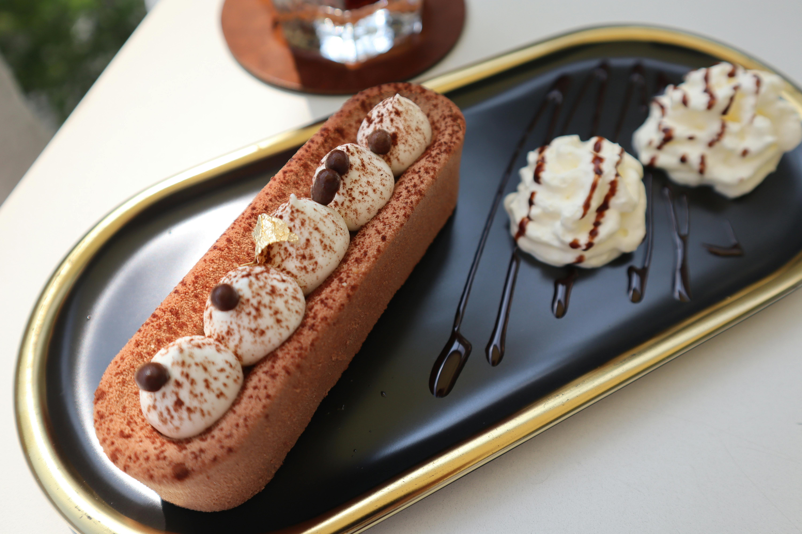

Prep Time
20 mins
Cook Time
1 hour
Total Time
5 hours (includes chilling)
Yield
12 slices
Ingredients
For the Crust:
- 1½ cups graham cracker crumbs
- ¼ cup granulated sugar
- 6 tablespoons unsalted butter, melted
For the Filling:
- 4 packages (8 oz each) cream cheese, softened
- 1 cup granulated sugar
- 1 teaspoon vanilla extract
- 4 large eggs
- ½ cup sour cream
- ½ cup heavy cream
Instructions
- Preheat your oven to 325°F (160°C). Grease a 9-inch springform pan and set aside.
- In a medium bowl, mix the graham cracker crumbs, sugar, and melted butter until combined. Press the mixture firmly into the bottom of the prepared pan.
- Bake the crust for 10 minutes, then remove from the oven and let it cool while you prepare the filling.
- In a large bowl, beat the cream cheese and sugar together until smooth and creamy. Add the vanilla extract and mix well.
- Add the eggs one at a time, beating after each addition until just combined. Be careful not to overmix.
- Stir in the sour cream and heavy cream until the filling is smooth and well combined.
- Pour the filling over the cooled crust and smooth the top with a spatula.
- Bake for 50-60 minutes, or until the edges are set but the center still jiggles slightly.
- Turn off the oven, crack the door open, and let the cheesecake cool in the oven for 1 hour.
- Remove the cheesecake from the oven and let it cool completely at room temperature. Then, refrigerate for at least 4 hours or overnight before serving.
Tip: To prevent cracks, avoid overmixing the batter and cool the cheesecake slowly in the oven.